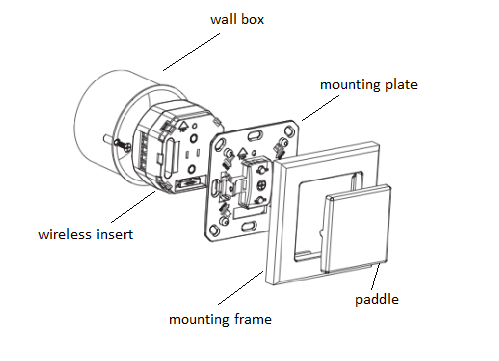
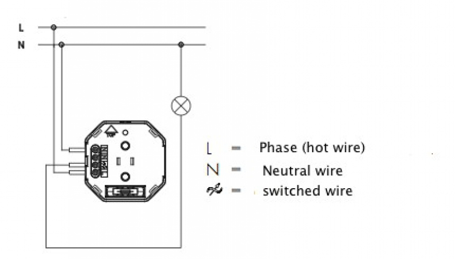

ZME_05431
Firmware Version : 1.8 |
 |
Quick StartA This device is a Z-Wave Actuator. Triple click one of the buttons on the device will include the device. A green blinking of LED will indicate successful inclusion. The device is excluded by triple click to one of the buttons. Please refer to the chapters below for detailed information about all aspects of the products usage. |
Product description
The switch Flush Mountable is a wireless actuator able to switch loads up to 2300 W. The device is delivered as complete set with flush mountable insert, paddle and mounting frame compatible to the design of the switching series Everlux in color white from REV / Duewi. The paddle of the device is used to control the device itself but can also be configured to activate scenes in a central IP gateway or controller. The status of the switch is indicated on a dual color LED for test purposes and every status change is - if configured - reported to a central IP gateway or controller. The function of the local paddle can be configured as detached from the local operation. In this local control, different devices are controlled by Z-Wave while the local actuator is controlled by other devices using Z-Wave. This device is designed for a 3 wire system and needs a neutral wire in the wall box.
Installation Guidelines
The insert is designed to fit into standard circular European wall boxes with 60 mm diameter. The insert combined with the mounting plate can be screwed in top of the wall box using the two screws delivered with the device. The mounting frame is then attached to the mounting plate and the switch is completed by pushing the switching paddle into the mounting frame. Mind the arrow on the inserts top side showing the mounting direction of the insert. It is also possible to mount the insert without any local operation behind a cover or inside a lamp. The mounting plate, frame and the switching paddle become useless in such a scenario.

The schematics below shows how to wire the actuator. The two wired from the mains distribution panel are connected to the inserts contacts N and L. The contact S is the switched contact and need to be connected to the cable to the load. The second wire to the load is connected to N as well. Both contacts marked as N are connected with each other.
A fuse protects the electronics of the actuator. The fuse is accessible on the top side of the device. Inside the plug there is the working fuse plus a spare fuse.

Behavior within the Z-Wave network
I On factory default the device does not belong to any Z-Wave network. The device needs to join an existing wireless network to communicate with the devices of this network. This process is called Inclusion. Devices can also leave a network. This process is called Exclusion. Both processes are initiated by the primary controller of the Z-Wave network. This controller will be turned into exclusion respective inclusion mode. Please refer to your primary controllers manual on how to turn your controller into inclusion or exclusion mode. Only if the primary controller is in inclusion or exclusion mode, this device can join or leave the network. Leaving the network - i.e. being excluded - sets the device back to factory default.
If the device already belongs to a network, follow the exclusion process before including it in your network. Otherwise inclusion of this device will fail. If the controller being included was a primary controller, it has to be reset first.
Blinking red/green LED indicates that the device is in factory reset state. Once the controller is turned into inclusion mode triple click of the buttons on the device will include the device. A green blinking of the LED will indicate successful inclusion that will be turned off shortly afterwards. The device is excluded by triple click to one of the buttons when the controller is in exclusion mode.
Operating the device
The actuator is operated by the local switching paddles or wirelessly using Z-Wave commands (communication patterns 1, 4, 5 and 7). If the insert is mounted correctly pushing the upper part of the paddle will turn on the load; pushing the lower part of the paddle will turn off the electric load.
The device is also able to report status changes to a controller (communication pattern 2) and to remotely operate other devices (communication pattern 5) by sending wireless Z-Wave commands. In case the remote device is a switch as well the remote operation is similar to the local operation by pushing upper to lower part of the switching paddle. However the device can also be configured with configuration parameter 13 and 14 to operate remote dimmers. To dim a remote device the paddle needs to be pushed and hold (upper part to dim up, lower part to dim down). Its furthermore possible to assign remote operation functions to the double click of the paddles.
Configuration parameter 2 enables a special function of the device. Its possible to define a timeout to automatically turn off the device after it was turned on manually.
Child Protection
The device can be turn into a child protection mode. In this mode all local operation is disabled.
The child protection mode MUST be turned on wirelessly. However in protected by sequence mode it is possible to unlock the device for local operation with a triple click. The unlock state will last for 5 seconds.
LED Control
- Red and green blinking continuously: Device is not included in a Z-Wave network
- Red lights up for 3 seconds: Device was not included/excluded after being put into learn mode by triple press of up/down button
- Green lights up for 3 seconds: The inclusion/exclusion was successful or new association was saved successfully
- Green or no light: depending on settings of configuration parameter for LED control
Associations
A Z-Wave devices control other Z-Wave devices. The relationship between one device controlling another device is called association. In order to control a different device, the controlling device needs to maintain a list of devices that will receive controlling commands. These lists are called association groups and they are always related to certain events (e.g. button pressed, sensor triggers, ...). In case the event happens all devices stored in the respective association group will receive a common wireless command.
Association Groups:
| 1 | Single press and hold of up/down buttons (max. nodes in group: 14) |
| 2 | Double press and press-hold of up/down buttons (max. nodes in group: 14) |
| 3 | Send Reports on switch state change (max. nodes in group: 14) |
Configuration Parameters
Z-Wave products are supposed to work out of the box after inclusion, however certain configuration can adapt the function better to user needs or unlock further enhanced features.
IMPORTANT: Controllers may only allow to configure signed values. In order to set values in the range 128 … 255 the value sent in the application shall be the desired value minus 256. For example: to set a parameter to 200 it may be needed to set a value of 200 minus 256 = minus 56. In case of two byte value the same logic applies: Values greater than 32768 may needed to be given as negative values too.
| Value | Description |
|---|---|
| 0 | Disabled |
| 1 | Show switch state |
| 2 | Night mode (inverted switch state) |
| 3 | Operated by Indicator Command Class (Default) |
| Value | Description |
|---|---|
| 0 | Disabled (Default) |
| 1 — 65535 | sec |
| Value | Description |
|---|---|
| 0 | Switch off (Default) |
| 1 | Ignore |
| 2 | Switch on |
| 3 | Switch on if load is off else switch off |
| Value | Description |
|---|---|
| 0 | No |
| 1 | Yes (Default) |
| Value | Description |
|---|---|
| 0 | No, turn off |
| 1 | Yes (Default) |
| Value | Description |
|---|---|
| 1 — 100 | in 10ms units (Default 50) |
| Value | Description |
|---|---|
| 0 | No (Default) |
| 1 | Yes |
| Value | Description |
|---|---|
| 0 | No |
| 1 | By single press and hold (Default) |
| 2 | By double press and press-hold |
| Value | Description |
|---|---|
| 0 | Disabled |
| 4 | Switch On/Off and Dim (send Basic Set and Switch Multilevel) (Default) |
| 1 | Switch On/Off only (send Basic Set) |
| 2 | Switch All |
| 3 | Send Scenes |
| 5 | Send Preconfigured Scenes |
| Value | Description |
|---|---|
| 0 | Disabled (Default) |
| 4 | Switch On/Off and Dim (send Basic Set and Switch Multilevel) |
| 1 | Switch On/Off only (send Basic Set) |
| 2 | Switch All |
| 3 | Send Scenes |
| 5 | Send Preconfigured Scenes |
| Value | Description |
|---|---|
| 1 | Switch off only (Default) |
| 2 | Switch on only |
| 255 | Switch all on and off |
| Value | Description |
|---|---|
| 0 | Switch off (Default) |
| 1 | Switch On if load is Off, else switch Off |
| 2 | Switch on |
Technical Data
| Power Supply | 230V ~50-60 Hz |
| Attachable Loads | up to 2300 W resistive load or up to 460 VA inductive load |
| Fuse | Type: T 1.25 A H (Load 1.25 Ampere, high shutdown capacity), D: 5 mm, L: 20 mm |
| IP Rating | IP 20 |
| Frequency | 868.42 MHz (SRD Band) |
| Wireless Range | up to 100 m outside, on average up to 20 m inside buildings |
| Explorer Frame Support | Yes |
| SDK | 4.54 pl1 |
| Device Type | Slave with routing capabilities |
| Generic Device Class | Binary Switch |
| Specific Device Class | Binary Power Switch |
| Routing | Yes |
| FLiRS | No |
| Firmware Version | 1.8 |